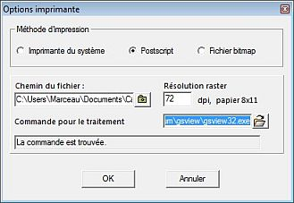

Menu Fichier
Le menu Fichier comprend les options suivantes
Nouvelle carte
La version 3 de Cartes du Ciel permet d'ouvrir des cartes du ciel dans des fenêtres séparées. L'avantage est de pouvoir visualiser en même temps des cartes de différentes régions du ciel, différentes heures, différents observatoires et même différentes configurations d'affichage.
Après avoir créer plusieurs cartes, vous pouvez les disposer à l'aide du menu Fenêtres, les mettre en pleine fenêtre principale, en arrière plan, les fermer, les redimensionner en tirant leur côté droit ou leur base.
Ouvrir
Cette option permet d'ouvrir une carte du ciel préalablement sauvée avec sa propre configuration de lieu et d'heure
Enregistrer sous
Cette option sauve la carte courante dans un fichier qui pourra être rechargé plus tard par l'option Ouvrir
Fermer la carte
Cette option ferme la carte courante dans le cas ou plus d'une carte sont ouvertes
Carte et options par défaut
Recharge la carte et les options à l'état du dernier enregistrement. C'est la même chose que de quitter le programme sans sauvegarde et de le relancer.
Calendrier
Cette fonction indique les phénomènes astronomiques pour une période donnée.
La fenêtre se décompose en sept zones :
- une zone d'entrée. Voir détails sur cette page.
- un onglet Crépuscule. Voir détails sur cette page.
- un onglet Planète. Voir détails sur cette page.
- un onglet Comète. Voir détails sur cette page.
- un onglet Asteroïde. Voir détails sur cette page.
- un onglet Eclipses solaires. Voir détails sur cette page.
- un onglet Eclipses lunaires. Voir détails sur cette page.
Etoiles variables
Lance le programme pour l'observation des étoiles variables VarObs.
Enregistrer l'image
La carte courante est sauvée comme fichier image. On peut choisir un fichier de format PNG, JPEG ou BMP
Imprimer
 Imprimer le contenu de la fenêtre vers une destination choisie.
L'impression peut se faire en couleurs comme à l'écran, en noir sur fond blanc ou en blanc sur fond noir. On peut aussi choisir l'orientation et les marges.
Imprimer le contenu de la fenêtre vers une destination choisie.
L'impression peut se faire en couleurs comme à l'écran, en noir sur fond blanc ou en blanc sur fond noir. On peut aussi choisir l'orientation et les marges.
Options imprimante
 Configurer l'imprimante pour imprimer le contenu de la fenêtre. Il y a trois options :
{kind=link}
- Imprimante du système : Ceci permet de configurer l'imprimante du système
- Postscript: Ceci permet d'imprimer vers un fichier postscript. Ceci nécessite que Ghostscript et GsView32 soient installés et que le chemin d'appel soit correct. Ceci ne fonctionne qu'avec la version 7.xx de GsView32
- Fichier bitmap : Ceci permet d'imprimer la carte dans un fichier BMP. Ceci nécessite de configurer correctement le chemin vers MsPaint
Sortie
Sortir de l'application Cartes du Ciel